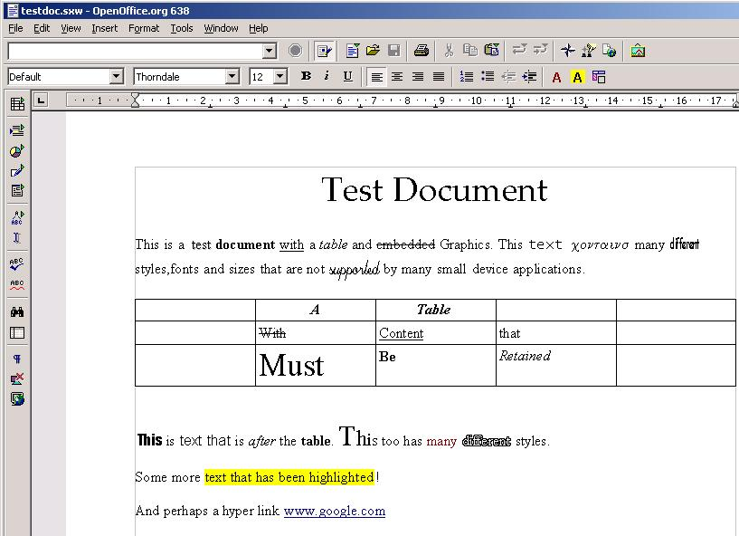
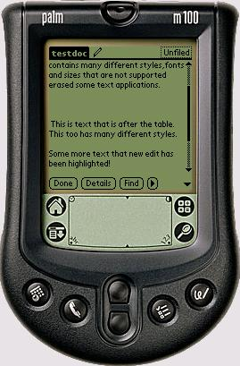
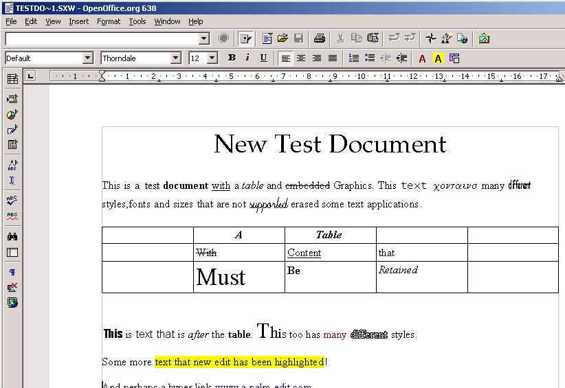

XMerge AportisDoc Plugin
Overview
The AportisDoc plugin converts text data between OpenOffice Writer format and AportisDoc's binary Palm DataBase file format.
The AportisDoc format is a plain-text format and does not support any formatting options.
| Category | Feature | Supported |
|---|---|---|
| Document Elements |
||
| Paragraphs |
yes |
|
| Styles |
no |
|
| Tables |
no |
|
| Lists |
no |
|
| Images |
no |
Using the AportisDoc plugin
The AportisDoc plugin is invoked in the same manner as all other XMerge plugins. Once the framework has been made aware of the plugin, the only thing needed to use it is to specify its MIME type as a source or destination type for conversion. The MIME type is specified in the
converter.xml file included in the aportisdoc.jar
file. Currently, this is set to application/x-aportisdoc
.For example, to use the AportisDoc plugin in conjunction with the test driver supplied with the XMerge framework:
% java org.openoffice.xmerge.test.Driver -from staroffice/sxw -to application/x-aportisdoc Test.sxw
% java.org.openoffice.xmerge.test.Driver -from application/x-aportisdoc -to staroffice/sxw Test.pdb
Features
The plugin currently supports conversion to plain-text only, as this is what AportisDoc supports.
Original StarWriter Document
Converts to

Converted Document Converted Document with Edits
Merging
When changes have been made on the small device, the user can either choose to convert the modified AportisDoc Palm Database to a reduced content and style StarWriter file, or the user can choose to merge the content changes made with the original StarWriter Document. In this way, new edits can be retained whilst also retaining document styles and formatting . To merge the modified AportisDoc DataBase, the XMerge test driver program may be used again.% java.org.openoffice.xmerge.test.Driver -from application/x-aportisdoc -to staroffice/sxw -merge Test.sxw Test.pdb

Original StarWriter Document with Merged Edits
Building the plugin
The AportisDoc plugin is built as part of the XMerge framework. Its classes are stored inaportisdoc.jar. See Building XMerge
for more instructions.